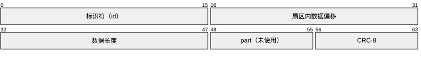

非易失性存储（Non-Volatile Storage，NVS）：原理与约束
非官方简体中文译本 · J04 · 英文基线 4.5.99 · 全站目录（94 篇） · J 批目录 · 本页英文原文
每条记录由标识符和数据组成。NVS 将这些记录存入闪存中按先进先出（FIFO）方式管理的环形缓冲区。闪存区域划分为多个扇区（sector），记录在当前扇区内依次追加；空间用尽后，NVS 会擦除另一个扇区，以备使用。擦除前，NVS 先检查要保留的记录在其他在用扇区中是否仍有副本；如果没有，就先复制记录。
标识符（id）是 16 位无符号数。对于每个仍在使用的 id，NVS 确保闪存中始终至少保留一份对应的记录。
译校注 · J04-U01
不要用 0xFFFF 分配业务 ID
所核 NVS 实现用 0xFFFF 标记扇区关闭和垃圾回收等内部记录。ID 的类型是 16 位无符号整数，不表示每个取值都适合作业务 ID；不要依赖写入 API 一定会拒绝这个值。
NVS 可以保存二进制数据块、字符串、整型、长整型，以及这些类型的任意组合。
每条记录由数据及 8 字节的元数据（metadata）组成。数据从扇区开头依次写入，元数据表则从扇区末尾向前增长。元数据包含标识符、数据在扇区内的偏移量、数据长度、part 字段（未使用）和循环冗余校验码（CRC）。这个 CRC 只覆盖元数据，用于确认写入是否完成，不校验实际数据。要保护数据本身，可以启用 CONFIG_NVS_DATA_CRC，另行计算可选的 CRC-32。
packet
0-15: "id"
16-31: "Data offset"
32-47: "Data length"
48-55: "part (unused)"
56-63: "CRC-8"


逐字段阅读：位范围与含义
- 位 0–15
- 标识符（id）
- 位 16–31
- 数据在扇区内的偏移量（Data offset）
- 位 32–47
- 数据长度（Data length）
- 位 48–55
- part 字段，未使用
- 位 56–63
- 元数据校验码（CRC-8），不覆盖数据本身
说明
仅在读取一条记录的全部数据时才校验其数据 CRC。部分读取不作此检查，因为数据 CRC 存放在该记录数据区的末尾。
说明
如果已有 NVS 数据是在未启用数据 CRC 的情况下写入的，直接启用该功能会导致所有旧数据被判为无效。
译校注 · J04-U02
旧数据不兼容不等于每次读取都报错
开启数据 CRC 后，旧记录会按含尾部 CRC 的格式解释；部分读取又不校验数据 CRC。因此，不能用“一次读取没有报错”来判断旧区兼容。切换格式前应先安排旧数据迁移。
固定版本依据（1 处）
写入 NVS 时始终先写数据，再写元数据。初始化时，NVS 会忽略那些已写入闪存却没有对应元数据的数据。
初始化期间，NVS 会核验闪存中的记录；若元数据缺失或不正确，就忽略对应的数据。
写入闪存前，NVS 先比较标识符及其对应的数据。如果记录没有变化，就不执行写入。
要避免频繁擦除闪存，必须留足空闲空间。空间不足可能使回收反复发生。NVS 检测到回收再也腾不出所需空间时，停止此次操作并报告空间不足。
NVS 存储实例的声明如下：
static struct nvs_fs fs = {
.flash_device = NVS_FLASH_DEVICE,
.sector_size = NVS_SECTOR_SIZE,
.sector_count = NVS_SECTOR_COUNT,
.offset = NVS_STORAGE_OFFSET,
};
其中：
NVS_FLASH_DEVICE是对所用闪存设备的引用；该设备必须已可用。NVS_SECTOR_SIZE是扇区大小，必须既是闪存擦除页大小的整数倍，又是 2 的幂。NVS_SECTOR_COUNT是扇区数，至少为 2。始终留一个空扇区，以便复制仍需保留的数据。NVS_STORAGE_OFFSET是这片存储区域在闪存内的偏移量。
闪存磨损（flash wear）
将数据写入闪存时，需要考虑磨损。闪存寿命受可擦除次数限制，每次以页为单位擦除，页大小由硬件决定。以 nRF51822 为例，页大小为 1024 字节，每页约可擦除 20,000 次。
估算设备使用寿命
假设有一个 4 字节的状态变量，每分钟更新一次，重启后需要恢复。为 NVS 分配两个扇区，每个扇区与一个擦除页一样大（1024 字节）。
每次保存这个变量占用 12 字节：8 字节元数据加 4 字节数据。按此估算，经过 1024/12 = 85.33 分钟，第一个扇区写满；再过 85.33 分钟，第二个也写满。由于只有两个扇区，运行约 171 分钟后，要擦除第一个扇区以便再次使用。按每页能擦除 20,000 次、约每 171 分钟轮到同一页擦除一次估算，寿命约为 171 × 20,000 分钟，即约 6.5 年。
译校注 · J04-U04
6.5 年估算的适用条件
示例按每次 4 字节数据加 8 字节元数据估算，没有把全部空间开销计入。扇区保留空间、写对齐、回收时搬移仍有效的数据，以及启用数据 CRC 时的额外字节，都会影响实际擦除间隔。约 6.5 年是示例估值，不是设备寿命保证。
更一般地，设：
NS为每分钟的存储请求数；DS为每次的数据大小，以字节为单位；SECTOR_SIZE为扇区大小，以字节为单位；PAGE_ERASES为每页可擦除的次数；
则预期寿命（以分钟为单位）可按下式估算：
SECTOR_COUNT * SECTOR_SIZE * PAGE_ERASES / (NS * (DS+8)) minutes
由公式可见，若预计寿命过短，可以增加 SECTOR_COUNT 或 SECTOR_SIZE。
写入块大小变化时的迁移
设备固件升级（DFU）可能会更换 NVS 使用的闪存驱动，从而改变所支持的最小写入块大小。只要分配表条目（ATE）在闪存中实际占用的大小不变，原有 NVS 存储格式就仍然兼容。在这一前提下，可以在 1、2、4、8 字节的写入块大小之间迁移。
示例（Sample）
samples/subsys/kvss/nvs 中有一个演示如何使用 NVS 的示例。
故障排查
- 使用 NVS 时发生 MPU 故障，或返回
-ETIMEDOUT错误 NVS 可以使用片上系统（SoC）的内部闪存。启用内存保护单元（MPU）时，闪存驱动要求 MPU 允许对闪存进行读、写和执行（RWX）；通过
CONFIG_MPU_ALLOW_FLASH_WRITE配置该权限。若禁用该选项，且使用 SoC 内部闪存的 NVS 应用是唯一运行的线程，就会发生 MPU 故障。在多线程应用中，故障可能被其他线程截获，此时 NVS API 会返回-ETIMEDOUT错误。
API 参考
NVS 子系统 API 由 nvs.h 提供：